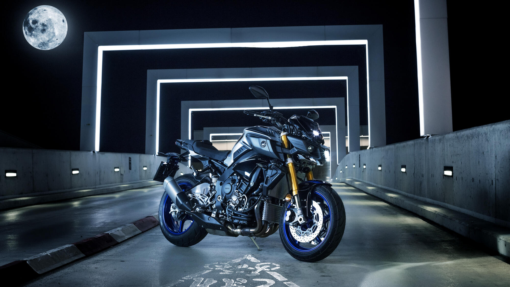

- Home
- Motoren
- Hyper Naked
- Ontdek
- Eigenschappen & Technische specificaties
- Configurator
- Shop Accessoires
- Shop Apparel
MT-10 SP
Zodra je kennis hebt gemaakt met de ultieme prestaties van de MT-10 SP, heb je onmiddellijk door dat je bent toegetreden tot The Dark Side of Japan.
Maak uw droom MT-10 SP Speed of Darkness
Deze speciale uitvoering van de MT-10 is uitgerust met een geavanceerd elektronisch veersysteem (ERS) van Öhlins, voor de best mogelijke controle, met een exclusief full colour TFT instrumentenpaneel en gespoten in een unieke kleurstelling.
Met het Traction Control Systeem (TCS), de Assist en Slipper Clutch (A&S) en het Quick Shifter Systeem (QSS) heb je de technologie in handen om het brute vermogen van deze 998cc motor te temmen. Het forse lineaire koppel in combinatie met de uitstekende wendbaarheid van het chassis maken van de MT-10 SP dé ultieme Hyper Naked. Yamaha MT-10 SP - Speed of Darkness
Overzicht
- Volledig instelbaar elektronisch veersysteem van Öhlins
- Exclusief kleurenschema in blauw en zilver
- Exclusief full colour TFT instrumentenpaneel
- Koppelrijk viercilinder 'CP4' crossplane motorblok
- Van de YZF-R1 afgeleide motor- en chassistechnologie
- Krachtig en lineair koppelverloop in het lage- en in het middentoerengebied
- Yamaha Chip Controlled Throttle (YCC-T), Yamaha D-MODE en Traction Control Systeem (TCS)
- Assist en Slipper Clutch (A&S) en Quick Shifter Systeem (QSS)
- Deltabox chassis met ultrakorte wielbasis
- Dynamisch 'Mass-Forward' silhouet
- Rechte, naar voren geleunde zitpositie
- Zwaar gespecificeerde remschijven met radiale remklauw vóór
MT-10 SP
De MT-10 SP komt voort uit de wens van onze ontwerpers om een high performance Hyper Naked te ontwikkelen met superieure wendbaarheid.

€18.999,00
Volledige prijsinformatie
MT-10 SP Icon Performance
€18.999,00Prijzen vanaf 1 januari 2020, hiermee vervallen alle voorgaande prijslijsten. Alle prijzen inclusief BPM, BTW en ONVERMIJDBAREKOSTEN S.E.& O